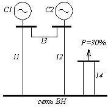
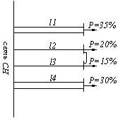
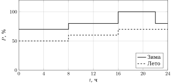
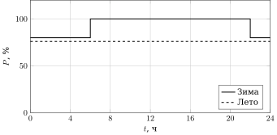
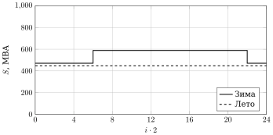
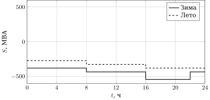
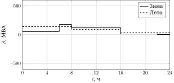

Проектирование электрической части КЭС¶
\(\def\PnomG{500}\def\UnomG{20}\def\CosfG{0{,}85}\def\XdG{0{,}242}\def\RG{0{,}00114}\def\Ng{4}\def\PmaxPust{7}\def\UnomSN{6}\def\CosfSN{0{,}85}\def\UnomRUVN{500}\def\SnomSOne{7000}\def\XsOne{1{,}3}\def\PavrezSOne{600}\def\SnomSTwo{8500}\def\XsTwo{0{,}9}\def\PavrezSTwo{810}\def\LRuvnOne{500}\def\LRuvnTwo{800}\def\LRuvnThree{600}\def\LRuvnFour{700}\def\UnomRUSN{220}\def\PngRUSN{460}\def\CosfNGRUSN{0{,}85}\def\LRusnOne{500}\def\LRusnTwo{800}\def\LRusnThree{600}\def\LRusnFour{700}\def\DZim{215}\def\DLet{150}\def\LoadRusnZim{70 \\ 70 \\ 70 \\ 70 \\ 80 \\ 80 \\ 80 \\ 80 \\ 100 \\ 100 \\ 100 \\ 80}\def\LoadRusnLet{50 \\ 50 \\ 50 \\ 50 \\ 60 \\ 60 \\ 60 \\ 60 \\ 70 \\ 70 \\ 70 \\ 70}\def\LoadGenZim{80 \\ 80 \\ 80 \\ 100 \\ 100 \\ 100 \\ 100 \\ 100 \\ 100 \\ 100 \\ 100 \\ 80}\def\LoadGenLet{76 \\ 76 \\ 76 \\ 76 \\ 76 \\ 76 \\ 76 \\ 76 \\ 76 \\ 76 \\ 76 \\ 76}\def\Kper{1}\def\PTwoGen{1000}\def\SBlTrNorm{547{,}059}\def\SBlTrRem{588{,}235}\def\SBlTrMax{588{,}235}\def\NTS{2}\def\PPerTsZero{460}\def\PPerTsOne{-40}\def\PPerTsTwo{-540}\def\PPerTsThree{-1040}\def\NGRusnVarOne{0}\def\NGRusnVarTwo{1}\def\SSN{35}\def\ZimPerTsVarOneTen{-541{,}176}\def\Snb{541{,}176}\def\SnbNt{270{,}588}\def\SnomATVarOne{400}\def\HStroke{16}\def\SOne{378{,}824}\def\STwoPrime{476{,}42}\def\KOne{0{,}947}\def\KTwoPrime{1{,}191}\def\KMax{1{,}353}\def\KTwo{1{,}218}\def\HCoef{15{,}309}\def\KDopSistPer{1{,}23}\def\KDopAvPer{1{,}5}\def\KbtRUVN{585}\def\KbtRUSN{450}\def\KatVarOne{600}\def\KatVarTwo{876}\def\KqRUVN{170}\def\KqRUSN{100}\def\KVarOne{4760}\def\KVarTwo{5107}\def\KoRUSN{2{,}9}\def\KaRUSN{2}\)
Исходные данные¶
Генераторы¶
| Тип | \(P_{\text{ном}}\), МВт | \(U_{\text{ном}}\), кВ | \(\cos\varphi_{\text{ном}}\) | \(X''_d\), о.е. | \(R_{\text{ст}}\), Ом | Кол-во |
|---|---|---|---|---|---|---|
| ТВВ-500-2ЕУ3 | \(\PnomG\) | \(\UnomG\) | \(\CosfG\) | \(\XdG\) | \(\RG\) | \(\Ng\) |
Собственные нужды¶
| \(P_{\text{max}}/P_{\text{уст}}\), % | \(U_{\text{ном}}\), кВ | \(\cos\varphi_{\text{ном}}\) |
|---|---|---|
| \(\PmaxPust\) | \(\UnomSN\) | \(\CosfSN\) |
Высшее напряжение (РУВН)¶
| \(U_{\text{ном}}\), кВ | Система | \(S_{\text{ном}}\), МВА | \(x_{\text{с}}\), о.е. | \(P_{\text{ав.рез}}\), МВт |
|---|---|---|---|---|
| \(\UnomRUVN\) | С1 | \(\SnomSOne\) | \(\XsOne\) | \(\PavrezSOne\) |
| \(\UnomRUVN\) | С2 | \(\SnomSTwo\) | \(\XsTwo\) | \(\PavrezSTwo\) |
| \(l_1\), км | \(l_2\), км | \(l_3\), км | \(l_4\), км |
|---|---|---|---|
| \(\LRuvnOne\) | \(\LRuvnTwo\) | \(\LRuvnThree\) | \(\LRuvnFour\) |

Рис. 1. Исходная схема
Среднее напряжение (РУСН)¶
| \(U_{\text{ном}}\), кВ | \(P_{\text{нг.max}}\), МВт | \(\cos\varphi_{\text{ном}}\) |
|---|---|---|
| \(\UnomRUSN\) | \(\PngRUSN\) | \(\CosfNGRUSN\) |
| \(l_1\), км | \(l_2\), км | \(l_3\), км | \(l_4\), км |
|---|---|---|---|
| \(\LRusnOne\) | \(\LRusnTwo\) | \(\LRusnThree\) | \(\LRusnFour\) |

Рис. 2. Схема сети среднего напряжения
Графики нагрузки¶
| \(d_{\text{зим}}\), дней | \(d_{\text{лет}}\), дней |
|---|---|
| \(\DZim\) | \(\DLet\) |

Рис. 3. Суточные графики нагрузки РУСН

Рис. 4. Суточные графики нагрузки генераторов
Глава 1. Выбор структурной схемы¶
Проверка укрупнённых блоков¶
Применять укрупнённые и объединённые блоки нельзя.
Выбор мощности блочных трансформаторов¶
Ремонтный и послеаварийный режим:
Мощность блочного трансформатора принимается не менее
Согласно СТО РАО ЕЭС 2007, недопустимо применять один трансформатор связи, поэтому принимаем \(n_{\text{тс}} = \NTS\).
Выбор числа генераторов, подключаемых к РУСН¶
Переток через трансформаторы связи при \(n_{\text{г.СН}}\) генераторах на РУСН:
| \(n_{\text{г.СН}}\), шт. | 0 | 1 | 2 | 3 |
|---|---|---|---|---|
| \(P_{\text{пер.тс}}\), МВт | \(\PPerTsZero\) | \(\PPerTsOne\) | \(\PPerTsTwo\) | \(\PPerTsThree\) |
Перетоки мощности через трансформаторы связи¶
Мощности нагрузок:

Рис. 5. Мощности нагрузки генераторов
Рис. 6. Мощности нагрузки РУСН
Мощность собственных нужд:
Перетоки через трансформаторы связи:

Рис. 7. Переток мощности через трансформаторы связи, вариант 1

Рис. 8. Переток мощности через трансформаторы связи, вариант 2
Выбор автотрансформаторов связи¶
Для варианта 2 (1 генератор на РУСН) окончательно выбираем группу из трёх однофазных автотрансформаторов АОДЦТН-267000/500/220.
Для варианта 1 (0 генераторов на РУСН) в нормальном режиме наибольший переток определяется по зимнему графику:
Мощность автотрансформатора принимается не менее
Приведённое число часов \(h' = \HStroke\).
Эквивалентные ступени графика:
Коэффициенты начальной нагрузки:
Допустимые коэффициенты перегрузки:
Окончательно выбираем АТДЦТН-400000/500/220.
Капиталовложения¶
| Обозначение | Значение, тыс. у.е. |
|---|---|
| \(K_{\text{бл.500}}\) | \(\KbtRUVN\) |
| \(K_{\text{бл.220}}\) | \(\KbtRUSN\) |
| \(K_{\text{ат.вар1}}\) | \(\KatVarOne\) |
| \(K_{\text{ат.вар2}}\) | \(\KatVarTwo\) |
| \(K_{\text{q.500}}\) | \(\KqRUVN\) |
| \(K_{\text{q.220}}\) | \(\KqRUSN\) |
Вариант 1 (0 генераторов на РУСН):
Вариант 2 (1 генератор на РУСН):